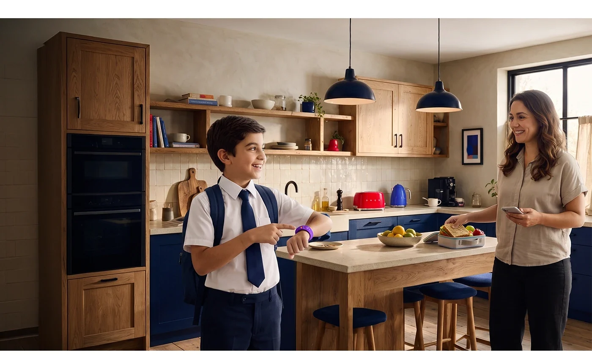

Agency work / Independent study
Uwallet Campaigns

01 / leoden dentsu · Agency work
Digital entertainment
Communication focus
Digital entertainment and purchases, brought into one phone-led visual.
Gaming, sport and digital purchase references build the entertainment context around the central phone and figure.
- Context
- Agency work · leoden dentsu
- My contribution
- Visual design
- Shown here
- Digital entertainment visual
02 / Independent concept study · Existing brand brief
Back to School

The brief
Make the payment bracelet part of a child’s school routine, balancing independence with parental visibility.
- Context
- Independent study of an existing brand brief
- My contribution
- Back to School art direction and visual development
- Visual device
- The child points to the bracelet when it is time to pay
The design decision
The brief frames the tension between a child’s spending independence and parental visibility. The visual response puts the bracelet inside familiar school-day moments and repeats one simple gesture: pointing to it when it is time to pay.


Next agency project